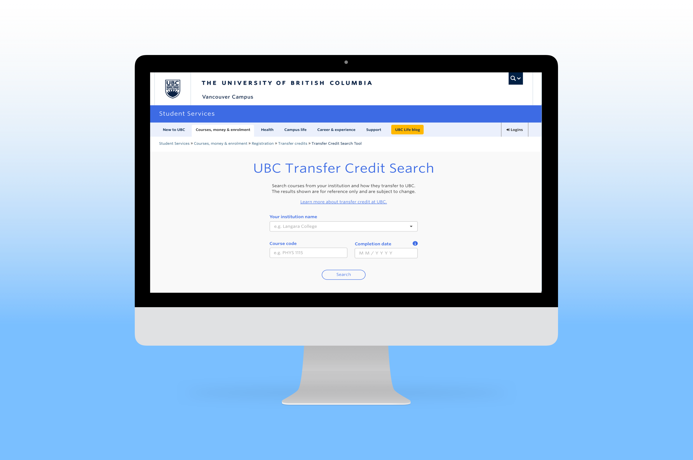
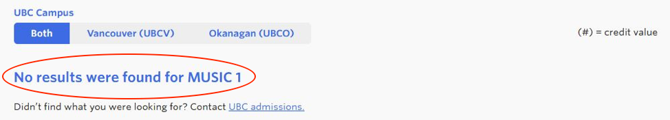

UX Lab @ UBC Student Communication Services
PROJECT DETAILS
Duration: 4 weeks per project
Team: Designer - Andy Chipperfield, UX Coordinator - Ariel Lee, UX Researchers - Tiffany Wu, Carley Low, Wynonna Moo
My Role: UX Researcher
Focus: User research, Usability testing, Data collection, Case study
The newly launched Transfer Credit Search Tool and 'What can I do with my Science degree?’ page on UBC’s website were created to assist advisors, incoming transfer students, and UBC Science students with course and career planning. Prior to Transfer Credit Search tool launch, three phases of usability testing were performed on the prototypes, allowing for reiteration in its development.
Presentations about the projects our team worked on over Summer 2019:
Transfer Credit Tool
'What Can I Do With My Science Degree?'
PROJECT GOAL
The purpose of the study is to understand how students and stakeholders are navigating the Transfer Credit Search Tool, as well as the 'What Can I Do With My Science Degree?' (WCIDWMSD) Page. The rest of this page will be focusing on Transfer Credit Search Tool Project.


TEST FLOW
To evaluate the performance of the newly launched search tool, the UBC UX Lab ran usability testing with incoming UBC transfer students and both UBC and non-UBC academic other stakeholders such as advisors.

The main usability study consisted of:
- Pre-screen Questionnaire
- Scenario Task
- Follow-up Questions
PARTICIPANT DEMOGRAPHICS

As multiple pre-launch testings had already been conducted, we tested a smaller sample of 7 participants (4 advisors, 3 students).
KEY FINDINGS
Search Field:
- Inputting course code without a space resulted in an error message.

Search Results:
- ‘No Results Found’ error message was confusing - users unsure whether this meant the course will not transfer at all was still awaiting evaluation.
- Course code inconsistencies between UBC database and other school databases, or the tool showed the course would not transfer when user indicated was supposed to
- 'Change Search' button: meant to be an easy way for users to return to the search page without having to re-input general information such as institution name - users found the button difficult to find or expected it to be somewhere else.


LIMITATIONS
- Limited to 7 participants
- Tool had already undergone 3 phases of pre-launch usability testing.
- Limited to Science students
- All 3 student participants were transferring into the Faculty of Science.
- May be helpful to run usability test with students from other faculties to have more representative data.
FUTURE DIRECTION
- Make ‘Change Search’ button more obvious or in more identifiable location.
- Specify error message to the error being made.
- Improve reliability - check for data accuracy.
- Increase exposure - improve SEO.